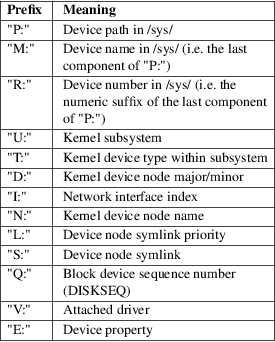

udevadm − udev management tool
|
udevadm [−−debug] [−−version] [−−help] |
||
|
udevadm info [options] [devpath] |
||
|
udevadm trigger [options] [devpath] |
||
|
udevadm settle [options] |
||
|
udevadm control option |
||
|
udevadm monitor [options] |
||
|
udevadm test [options] devpath |
||
|
udevadm test−builtin [options] command devpath |
||
|
udevadm wait [options] device|syspath |
||
|
udevadm lock [options] command |
udevadm expects a command and command specific options. It controls the runtime behavior of systemd−udevd, requests kernel events, manages the event queue, and provides simple debugging mechanisms.
−d, −−debug
Print debug messages to standard error. This option is implied in udevadm test and udevadm test−builtin commands.
−h, −−help
Print a short help text and exit.
udevadm info
[options]
[devpath|file|unit...]
Query the udev database for device information.
Positional arguments should be used to specify one or more devices. Each one may be a device name (in which case it must start with /dev/), a sys path (in which case it must start with /sys/), or a systemd device unit name (in which case it must end with ".device", see systemd.device(5)).
−q, −−query=TYPE
Query the database for the specified type of device data. Valid TYPEs are: name, symlink, path, property, all.
−−property=NAME
When showing device properties using the −−query=property option, limit display to properties specified in the argument. The argument should be a comma−separated list of property names. If not specified, all known properties are shown.
−−value
When showing device properties using the −−query=property option, print only their values, and skip the property name and "=".
Cannot be used together with −x/−−export or −P/−−export−prefix.
−p, −−path=DEVPATH
The /sys/ path of the device to query, e.g. [/sys/]/class/block/sda. This option is an alternative to the positional argument with a /sys/ prefix. udevadm info −−path=/class/block/sda is equivalent to udevadm info /sys/class/block/sda.
−n, −−name=FILE
The name of the device node or a symlink to query, e.g. [/dev/]/sda. This option is an alternative to the positional argument with a /dev/ prefix. udevadm info −−name=sda is equivalent to udevadm info /dev/sda.
−r, −−root
Print absolute paths in name or symlink query.
−a, −−attribute−walk
Print all sysfs properties of the specified device that can be used in udev rules to match the specified device. It prints all devices along the chain, up to the root of sysfs that can be used in udev rules.
−t, −−tree
Display a sysfs tree. This recursively iterates through the sysfs hierarchy and displays it in a tree structure. If a path is specified only the subtree below and its parent directories are shown. This will show both device and subsystem items.
−x, −−export
Print output as key/value pairs. Values are enclosed in single quotes. This takes effects only when −−query=property or −−device−id−of−file=FILE is specified.
−P, −−export−prefix=NAME
Add a prefix to the key name of exported values. This implies −−export.
−d, −−device−id−of−file=FILE
Print major/minor numbers of the underlying device, where the file lives on. If this is specified, all positional arguments are ignored.
−e, −−export−db
Export the content of the udev database.
−c, −−cleanup−db
Cleanup the udev database.
−w[SECONDS], −−wait−for−initialization[=SECONDS]
Wait for device to be initialized. If argument SECONDS is not specified, the default is to wait forever.
−h, −−help
Print a short help text and exit.
−−no−pager
Do not pipe output into a pager.
The generated output shows the current device database entry in a terse format. Each line shown is prefixed with one of the following characters:
Table 1. udevadm info output prefixes

udevadm trigger
[options]
[devpath|file|unit]
Request device events from the kernel. Primarily used to
replay events at system coldplug time.
Takes device specifications as positional arguments. See the description of info above.
−v, −−verbose
Print the list of devices which will be triggered.
−n, −−dry−run
Do not actually trigger the event.
−q, −−quiet
Suppress error logging in triggering events.
−t, −−type=TYPE
Trigger a specific type of devices. Valid types are "all", "devices", and "subsystems". The default value is "devices".
−c, −−action=ACTION
Type of event to be triggered. Possible actions are "add", "remove", "change", "move", "online", "offline", "bind", and "unbind". Also, the special value "help" can be used to list the possible actions. The default value is "change".
−−prioritized−subsystem=SUBSYSTEM[,SUBSYSTEM...]
Takes a comma separated list of subsystems. When triggering events for devices, the devices from the specified subsystems and their parents are triggered first. For example, if −−prioritized−subsystem=block,net, then firstly all block devices and their parents are triggered, in the next all network devices and their parents are triggered, and lastly the other devices are triggered. This option can be specified multiple times, and in that case the lists of the subsystems will be merged. That is, −−prioritized−subsystem=block −−prioritized−subsystem=net is equivalent to −−prioritized−subsystem=block,net.
−s, −−subsystem−match=SUBSYSTEM
Trigger events for devices which belong to a matching subsystem. This option supports shell style pattern matching. When this option is specified more than once, then each matching result is ORed, that is, all the devices in each subsystem are triggered.
−S, −−subsystem−nomatch=SUBSYSTEM
Do not trigger events for devices which belong to a matching subsystem. This option supports shell style pattern matching. When this option is specified more than once, then each matching result is ANDed, that is, devices which do not match all specified subsystems are triggered.
−a, −−attr−match=ATTRIBUTE=VALUE
Trigger events for devices with a matching sysfs attribute. If a value is specified along with the attribute name, the content of the attribute is matched against the given value using shell style pattern matching. If no value is specified, the existence of the sysfs attribute is checked. When this option is specified multiple times, then each matching result is ANDed, that is, only devices which have all specified attributes are triggered.
−A, −−attr−nomatch=ATTRIBUTE=VALUE
Do not trigger events for devices with a matching sysfs attribute. If a value is specified along with the attribute name, the content of the attribute is matched against the given value using shell style pattern matching. If no value is specified, the existence of the sysfs attribute is checked. When this option is specified multiple times, then each matching result is ANDed, that is, only devices which have none of the specified attributes are triggered.
−p, −−property−match=PROPERTY=VALUE
Trigger events for devices with a matching property value. This option supports shell style pattern matching. When this option is specified more than once, then each matching result is ORed, that is, devices which have one of the specified properties are triggered.
−g, −−tag−match=TAG
Trigger events for devices with a matching tag. When this option is specified multiple times, then each matching result is ANDed, that is, devices which have all specified tags are triggered.
−y, −−sysname−match=NAME
Trigger events for devices for which the last component (i.e. the filename) of the /sys/ path matches the specified PATH. This option supports shell style pattern matching. When this option is specified more than once, then each matching result is ORed, that is, all devices which have any of the specified NAME are triggered.
−−name−match=NAME
Trigger events for devices with a matching device path. When this option is specified more than once, then each matching result is ORed, that is, all specified devices are triggered.
−b, −−parent−match=SYSPATH
Trigger events for all children of a given device. When this option is specified more than once, then each matching result is ORed, that is, all children of each specified device are triggered.
−−initialized−match, −−initialized−nomatch
When −−initialized−match is specified, trigger events for devices that are already initialized by systemd−udevd, and skip devices that are not initialized yet.
When −−initialized−nomatch is specified, trigger events for devices that are not initialized by systemd−udevd yet, and skip devices that are already initialized.
Typically, it is essential that applications which intend to use such a match, make sure a suitable udev rule is installed that sets at least one property on devices that shall be matched. See also Initialized Devices section below for more details.
WARNING: −−initialized−nomatch can potentially save a significant amount of time compared to re−triggering all devices in the system and e.g. can be used to optimize boot time. However, this is not safe to be used in a boot sequence in general. Especially, when udev rules for a device depend on its parent devices (e.g. "ATTRS" or "IMPORT{parent}" keys, see udev(7) for more details), the final state of the device becomes easily unstable with this option.
−w, −−settle
Apart from triggering events, also waits for those events to finish. Note that this is different from calling udevadm settle. udevadm settle waits for all events to finish. This option only waits for events triggered by the same command to finish.
−−uuid
Trigger the synthetic device events, and associate a randomized UUID with each. These UUIDs are printed to standard output, one line for each event. These UUIDs are included in the uevent environment block (in the "SYNTH_UUID=" property) and may be used to track delivery of the generated events.
−−wait−daemon[=SECONDS]
Before triggering uevents, wait for systemd−udevd daemon to be initialized. Optionally takes timeout value. Default timeout is 5 seconds. This is equivalent to invoke invoking udevadm control −−ping before udevadm trigger.
−h, −−help
Print a short help text and exit.
In addition, optional positional arguments can be used to specify device names or sys paths. They must start with /dev/ or /sys/ respectively.
udevadm
settle [options]
Watches the udev event queue, and exits if all current
events are handled.
−t, −−timeout=SECONDS
Maximum number of seconds to wait for the event queue to become empty. The default value is 120 seconds. A value of 0 will check if the queue is empty and always return immediately. A non−zero value will return an exit code of 0 if queue became empty before timeout was reached, non−zero otherwise.
−E, −−exit−if−exists=FILE
Stop waiting if file exists.
−h, −−help
Print a short help text and exit.
See systemd-udev-settle.service(8) for more information.
udevadm
control option
Modify the internal state of the running udev daemon.
−e, −−exit
Signal and wait for systemd−udevd to exit. No option except for −−timeout can be specified after this option. Note that systemd−udevd.service contains Restart=always and so as a result, this option restarts systemd−udevd. If you want to stop systemd−udevd.service, please use the following:
systemctl stop systemd−udevd−control.socket systemd−udevd−kernel.socket systemd−udevd.service
−l, −−log−level=value
Set the internal log level of systemd−udevd. Valid values are the numerical syslog priorities or their textual representations: emerg, alert, crit, err, warning, notice, info, and debug.
−s, −−stop−exec−queue
Signal systemd−udevd to stop executing new events. Incoming events will be queued.
−S, −−start−exec−queue
Signal systemd−udevd to enable the execution of events.
−R, −−reload
Signal systemd−udevd to reload the rules files and other databases like the kernel module index. Reloading rules and databases does not apply any changes to already existing devices; the new configuration will only be applied to new events.
−p, −−property=KEY=value
Set a global property for all events.
−m, −−children−max=value
Set the maximum number of events, systemd−udevd will handle at the same time.
−−ping
Send a ping message to systemd−udevd and wait for the reply. This may be useful to check that systemd−udevd daemon is running.
−t, −−timeout=seconds
The maximum number of seconds to wait for a reply from systemd−udevd.
−h, −−help
Print a short help text and exit.
udevadm
monitor [options]
Listens to the kernel uevents and events sent out by a udev
rule and prints the devpath of the event to the console. It
can be used to analyze the event timing, by comparing the
timestamps of the kernel uevent and the udev event.
−k, −−kernel
Print the kernel uevents.
−u, −−udev
Print the udev event after the rule processing.
−p, −−property
Also print the properties of the event.
−s, −−subsystem−match=string[/string]
Filter kernel uevents and udev events by subsystem[/devtype]. Only events with a matching subsystem value will pass. When this option is specified more than once, then each matching result is ORed, that is, all devices in the specified subsystems are monitored.
−t, −−tag−match=string
Filter udev events by tag. Only udev events with a given tag attached will pass. When this option is specified more than once, then each matching result is ORed, that is, devices which have one of the specified tags are monitored.
−h, −−help
Print a short help text and exit.
udevadm test
[options]
[devpath|file|unit]
Simulate a udev event run for the given device, and print
debug output.
−a, −−action=ACTION
Type of event to be simulated. Possible actions are "add", "remove", "change", "move", "online", "offline", "bind", and "unbind". Also, the special value "help" can be used to list the possible actions. The default value is "add".
−N, −−resolve−names=early|late|never
Specify when udevadm should resolve names of users and groups. When set to early (the default), names will be resolved when the rules are parsed. When set to late, names will be resolved for every event. When set to never, names will never be resolved and all devices will be owned by root.
−h, −−help
Print a short help text and exit.
udevadm
test−builtin [options] [command]
[devpath|file|unit]
Run a built−in command COMMAND for device
DEVPATH, and print debug output.
−a, −−action=ACTION
Type of event to be simulated. Possible actions are "add", "remove", "change", "move", "online", "offline", "bind", and "unbind". Also, the special value "help" can be used to list the possible actions. The default value is "add".
−h, −−help
Print a short help text and exit.
udevadm wait
[options] [device|syspath] ...
Wait for devices or device symlinks being created and
initialized by systemd−udevd. Each device path
must start with "/dev/" or "/sys/", e.g.
"/dev/sda",
"/dev/disk/by−path/pci−0000:3c:00.0−nvme−1−part1",
"/sys/devices/pci0000:00/0000:00:1f.6/net/eth0",
or "/sys/class/net/eth0". This can take multiple
devices. This may be useful for waiting for devices being
processed by systemd−udevd after e.g.
partitioning or formatting the devices.
−t, −−timeout=SECONDS
Maximum number of seconds to wait for the specified devices or device symlinks being created, initialized, or removed. The default value is "infinity".
−−initialized=BOOL
Check if systemd−udevd initialized devices. Defaults to true. When false, the command only checks if the specified devices exist. Set false to this setting if there is no udev rules for the specified devices, as the devices will never be considered as initialized in that case. See Initialized Devices section below for more details.
−−removed
When specified, the command wait for devices being removed instead of created or initialized. If this is specified, −−initialized= will be ignored.
−−settle
When specified, also watches the udev event queue, and wait for all queued events being processed by systemd−udevd.
−h, −−help
Print a short help text and exit.
udevadm lock
[options] [command] ...
udevadm lock takes an (advisory) exclusive lock on a
block device (or all specified devices), as per
Locking Block Device
Access
[1]
and invokes a program with the locks
taken. When the invoked program exits the locks are
automatically released and its return value is propagated as
exit code of udevadm lock.
This tool is in particular useful to ensure that systemd-udevd.service(8) does not probe a block device while changes are made to it, for example partitions created or file systems formatted. Note that many tools that interface with block devices natively support taking relevant locks, see for example sfdisk(8)'s −−lock switch.
The command expects at least one block device specified via −−device= or −−backing=, and a command line to execute as arguments.
−−device=DEVICE, −d DEVICE
Takes a path to a device node of the device to lock. This switch may be used multiple times (and in combination with −−backing=) in order to lock multiple devices. If a partition block device node is specified the containing "whole" block device is automatically determined and used for the lock, as per the specification. If multiple devices are specified, they are deduplicated, sorted by the major/minor of their device nodes and then locked in order.
This switch must be used at least once, to specify at least one device to lock. (Alternatively, use −−backing=, see below.)
−−backing=PATH, −b PATH
If a path to a device node is specified, identical to −−device=. However, this switch alternatively accepts a path to a regular file or directory, in which case the block device of the file system the file/directory resides on is automatically determined and used as if it was specified with −−device=.
−−timeout=SECS, −t SECS
Specifies how long to wait at most until all locks can be taken. Takes a value in seconds, or in the usual supported time units, see systemd.time(7). If specified as zero the lock is attempted and if not successful the invocation will immediately fail. If passed as "infinity" (the default) the invocation will wait indefinitely until the lock can be acquired. If the lock cannot be taken in the specified time the specified command will not be executed and the invocation will fail.
−−print, −p
Instead of locking the specified devices and executing a command, just print the device paths that would be locked, and execute no command. This command is useful to determine the "whole" block device in case a partition block device is specified. The devices will be sorted by their device node major number as primary ordering key and the minor number as secondary ordering key (i.e. they are shown in the order they'd be locked). Note that the number of lines printed here can be less than the number of −−device= and −−backing= switches specified in case these resolve to the same "whole" devices.
−h, −−help
Print a short help text and exit.
Initialized devices are those for which at least one udev rule already completed execution – for any action but "remove" — that set a property or other device setting (and thus has an entry in the udev device database). Devices are no longer considered initialized if a "remove" action is seen for them (which removes their entry in the udev device database). Note that devices that have no udev rules are never considered initialized, but might still be announced via the sd−device API (or similar).
Example 1. Format a File System
Take a lock on the backing block device while creating a file system, to ensure that systemd−udevd doesn't probe or announce the new superblock before it is comprehensively written:
# udevadm lock −−device=/dev/sda1 mkfs.ext4 /dev/sda1
Example 2. Format a RAID File System
Similar, but take locks on multiple devices at once:
# udevadm lock −−device=/dev/sda1 −−device=/dev/sdb1 mkfs.btrfs /dev/sda1 /dev/sdb1
Example 3. Copy in a File System
Take a lock on the backing block device while copying in a prepared file system image, to ensure that systemd−udevd doesn't probe or announce the new superblock before it is fully written:
# udevadm lock −d /dev/sda1 dd if=fs.raw of=/dev/sda1
udev(7), systemd-udevd.service(8)
|
1. |
Locking Block Device Access |
https://systemd.io/BLOCK_DEVICE_LOCKING